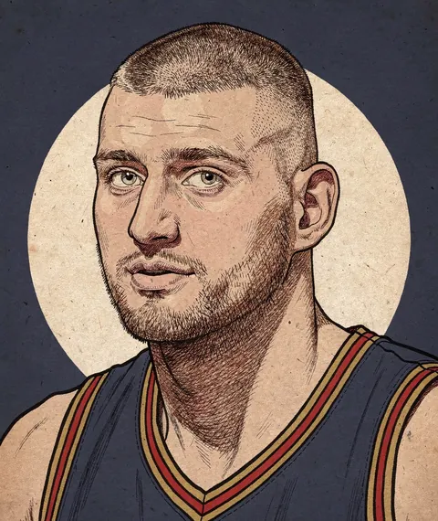

The Draft Model’s Report Card
Fifteen drafts graded on the calls that cost real money: the stars it saw, the ones it missed, and what it makes of the 2026 class.

Last June, 4.2 million people watched the first round of the NBA draft.1 Six weeks earlier, 2.3 million watched a lottery whose only job is to decide the order teams pick in.2 They have a point. The draft is the one place in the league where talent is sold below cost. Over the last nineteen seasons, players still on their first four years of a draft deal produced about a quarter of the league’s Marginal WAR (mWAR) for a sixth of its payroll, and about a third of all the value teams got beyond what they paid for it.3 The trouble is that a draft is lopsided: in a typical class, the best three of sixty players return about half of everything the class is worth, so most of any grade rides on a handful of calls.4
The mock drafts are past counting, and almost none of them show their math. The few that did had a way of disappearing. John Hollinger’s Draft Rater ran at ESPN until the Grizzlies hired him in 2012. Layne Vashro’s projections ran at Nylon Calculus until he went to work for the company that owns the Nuggets. Kevin Pelton’s ran at ESPN until the Houston Comets hired him in March. Jeremias Engelmann, who built ESPN’s RPM, went the other way: after stints with the Suns and Mavericks, he publishes his draft model again. Teams clearly think these models are worth something. The misses do get graded, loudly; Freezing Cold Takes has built a following on them. A whole board, held to the same standard as the teams that drafted it, is a rarer thing.
The rules
Pricing a pick as surplus, what a player is worth minus what he’s paid, goes back to Cade Massey and Richard Thaler, who found that NFL teams overpaid for top picks: on average, the last pick of the first round returned more surplus than the first.5 NBA versions by Arturo Galletti and Nate Silver ran the same sum over the rookie deal and stopped there.6 Run it on the NBA and the curse isn’t there. Over the rookie deal, the top three picks returned about three times the surplus of picks 23 to 30, because the league’s rookie scale pays its top picks so little.7 Stopping at the rookie deal still misses half of what a pick is worth, though. A club that re-signs its player keeps getting paid back: for a star because the max caps what he can earn, for a good player because clubs re-sign their own for less than the open market would pay. Count those years too and every group of picks about doubles its return.8
That’s the sum the board does in advance. For every draft from 2007 to 2021, it valued every prospect it could find as of that spring, using a version of itself that never saw that class.9 First, instead of one guess about a prospect, it makes a spread of them, every season of his career from bust to star, each with its chance. Second, it prices each outcome the way the club would collect it: the rookie deal at open-market prices, then, if the club re-signs him, what he’s worth beyond his pay, which goes negative when he falls short.10 Third, it weights every outcome by its chance and adds them up. That’s the expected value, and it’s what the board ranks on.11 Then we wait and see what each player actually returned.
Re-signing is most of the price at the top. On this year’s board, 72% of the top ten’s expected value comes after the rookie deal, and their expected value is about three times their middle outcome. The tables below show both, as Expected and Middle. One confession before the grades: I built the board knowing how every one of these careers went. The version that graded each class never saw it, but I chose its recipe with hindsight, so treat its record as a best case.
The grade
Here’s the test. In every class, take each pair of players and ask whether the board had them in the right order, then ask the same of the draft. Then weight each pair by what was at stake: getting Jokić and a bust the wrong way round costs about $1.7B; mixing up two second-rounders who both washed out costs almost nothing. Weighted that way, the board got 84% of the dollars right, the teams 78%, and the board did better in fourteen of fifteen drafts. That’s bigger than luck, and it doesn’t lean on Jokić: leave his draft out and it’s thirteen of fourteen.12
Count every pair the same instead, and it’s close: the board did better in ten of fifteen drafts, a margin luck alone would produce 12% of the time.13 That isn’t a contradiction. Most of the pairs in a draft are between players who returned close to nothing, and on those the board is no better than 30 front offices. Where it beats them is the expensive calls, which is the one thing it was built for: seeing the star in the range.
The stars it saw
The players the board ranked at least ten spots above where they were drafted, who then finished in the top five of their class:
| Class | Player | Pick | Board rank | Expected | Middle | Finished | Returned |
|---|---|---|---|---|---|---|---|
| 2014 | Nikola Jokić | 41 | 6 | $267M | $0.0M | 1st | +$1.7B |
| 2012 | Draymond Green | 35 | 15 | $134M | $30M | 2nd | +$848M |
| 2015 | Kevon Looney | 30 | 12 | $155M | $31M | 5th | +$208M |
| 2020 | Tyrese Maxey | 21 | 5 | $299M | $108M | 5th | +$308M |
| 2017 | Derrick White | 29 | 14 | $149M | $57M | 4th | +$546M |
| 2020 | Desmond Bane | 30 | 15 | $151M | $42M | 2nd | +$382M |
| 2011 | Jimmy Butler | 30 | 16 | $104M | $26M | 1st | +$991M |
| 2008 | George Hill | 26 | 12 | $127M | $51M | 3rd | +$477M |
Expected is the board’s average career value to the drafting club, Middle its median; Finished is where his return ranks in his class; Returned is what he has actually returned so far. All at the 2026 cap.
In 2014, forty players went before Nikola Jokić. The board had him 6th, and its middle outcome for him was nothing: its best single guess was that he would never stick. It ranked him 6th anyway, on the chance that a 19-year-old big playing in Serbia became a star, and he has been worth $1.7B to Denver. That’s the pattern down the whole table: Jimmy Butler’s middle was $26M, Draymond Green’s $30M. The board didn’t think these players would be stars. It thought the chance was worth more than the teams did.
I’d like it noted that Derrick White is on that table: 29th pick, 14th on the board, 4th in his class. He has returned $546M to his teams, $390M of it on the contracts he signed after his rookie deal. Teams usually have the edge in re-signing their own players: restricted free agency lets them match any offer, and Bird rights let them go over the cap to do it.14 Boston has been collecting since February 2022.
The stars it didn’t
The board had most of the stars. Of the 45 players who finished in the top three of their class, it had 29 in its top ten, and it ranked 28 higher than the teams did. It ranked 12 lower, and a few of those were expensive. Russell Westbrook went fourth in 2008; the board had him 15th and expected $119M from him, and he has returned $937M. Joel Embiid went third in 2014; the board had him 11th.
The more expensive mistakes are the prospects it loved who didn’t pan out, because those are the ones a team acts on. There are fewer of them than the league’s. Of the board’s top three in each class, 32 of 45 finished in the top ten of their class; of the players actually taken first, second and third, 23.15 Here are the ones that didn’t:
| Class | Player | Pick | Board rank | Expected | Middle | Finished | Returned |
|---|---|---|---|---|---|---|---|
| 2011 | Brandon Knight | 8 | 3 | $234M | $60M | 59th | −$120M |
| 2017 | Markelle Fultz | 1 | 2 | $464M | $169M | 59th | −$12M |
| 2013 | Nerlens Noel | 6 | 1 | $485M | $177M | 55th | −$3.4M |
| 2011 | Derrick Williams | 2 | 2 | $242M | $33M | 45th | $0.0M |
| 2009 | Nick Calathes | 45 | 3 | $388M | $69M | 42nd | +$1.8M |
Expected is the board’s average career value to the drafting club, Middle its median; Finished is where his return ranks in his class; Returned is what he has actually returned so far. All at the 2026 cap.
Brandon Knight was the board’s third pick in 2011, and he has returned his teams −$120M. Phoenix traded for him in 2015 and re-signed him that summer for five seasons at $12M to $16M a year. By our numbers he was below replacement in every season of that deal he played, and he missed one entirely. That minus sign is real: a contract that pays a player more than he’s worth counts as a loss, because it is one. Some of the rest are injuries, which the board prices as a risk but can’t call for any one player, and some are the board being wrong. It doesn’t get to choose which.
The 2026 class
The draft was in June, so we can put the board next to where everybody went, and wait. At the top they mostly agree: the board’s first two, Cameron Boozer and AJ Dybantsa, went third and first. Below that they part ways. Four of the board’s top ten went between 17th and 22nd. Its top ten:
| Board rank | Player | From | Pick | Expected | Middle | Range |
|---|---|---|---|---|---|---|
| 1 | Cameron Boozer | Duke | 3 | $960M | $407M | −$7.2M to $3.1B |
| 2 | AJ Dybantsa | BYU | 1 | $491M | $145M | −$7.9M to $1.8B |
| 3 | Labaron Philon Jr. | Alabama | 22 | $435M | $139M | −$2.0M to $1.5B |
| 4 | Keaton Wagler | Illinois | 5 | $415M | $157M | −$5.0M to $1.4B |
| 5 | Ebuka Okorie | Stanford | 17 | $379M | $128M | −$3.4M to $1.3B |
| 6 | Darryn Peterson | Kansas | 2 | $320M | $40M | −$7.0M to $1.2B |
| 7 | Christian Anderson Jr. | Texas Tech | 18 | $313M | $70M | −$2.7M to $1.1B |
| 8 | Allen Graves | Santa Clara | 19 | $289M | $81M | −$1.3M to $1.1B |
| 9 | Mikel Brown Jr. | Louisville | 6 | $281M | $97M | −$5.5M to $924M |
| 10 | Kingston Flemings | Houston | 8 | $278M | $61M | −$4.7M to $1.0B |
Career value to the drafting club at the 2026 cap: the average (Expected), the median (Middle), and the 10th to 90th percentile outcome (Range).
For the typical player in that top ten, the average is 3.2 times the middle: most of what makes each of them valuable is the chance he turns into a star. No one more than Darryn Peterson, the second pick. The board expects $320M from him, but its middle outcome is $40M. It ranks him sixth on a small chance he becomes a superstar and a much larger one that he doesn’t.
Its biggest bargain is Maliq Brown, who went 44th. The board has him 14th. It likes his motor and his feel and doesn’t lean on the scouts’ shooting grade, which puts him near the bottom.16 Whether he learns to shoot is the whole bet.
When this class has played five seasons, I’ll grade it the same way. Until then, watch two players: Darryn Peterson, to see whether the second pick finds the top of his range, and Maliq Brown, to see whether he learns to shoot.
Figures: the draft board, classes 2007 to 2021 out of fold and the 2026 class as projected; what each player returned his drafting club through 2025-26; all at the 2026 cap, as of this build. Wins are on this model’s own scale and dollars at the open-market price of a win; the method explains both.
- First round, 2026, on ESPN and ABC. ↩
- The 2026 lottery, on ABC. ↩
- Seasons 2007-08 to 2025-26: drafted players in their first four seasons produced 26% of the league’s mWAR, counting only what was above replacement, on 16% of its salaries, and 33% of its surplus, what players were worth beyond what they were paid, with overpaid players counted at zero. ↩
- Across the fifteen classes graded here, the three biggest returns made up 44% of the class’s total, on average. ↩
- Cade Massey and Richard H. Thaler, “The Loser’s Curse: Decision Making and Market Efficiency in the National Football League Draft,” Management Science 59, no. 7 (2013): 1479–95. Their surplus is a player’s performance, priced at what comparable veterans are paid, minus his pay, over his first five seasons. ↩
- Arturo Galletti, “The Value of a Draft Pick and Draft Pedigree in the Finals,” Wages of Wins Journal, June 22, 2011, over a player’s first four seasons; Nate Silver, “How Much Is Winning the (NBA Draft) Lottery Really Worth?” FiveThirtyEight, 2014, over five. ↩
- Classes 2007 to 2016, so every career has had ten seasons: what each of 595 drafted players returned the club that drafted him, minus his rookie salary, as Massey and Thaler did and the board doesn’t. Resampling whole classes, the ratio’s middle 90% runs from 2.0 to 4.9, and the surplus falls from each group of picks to the next. ↩
- The top three still return about three times what picks 23 to 30 do, with picks four to seven about level with them. ↩
- Out of fold: each class is valued by a board fitted without it. The draft method has the details. ↩
- His pay on the next deal is the max if he is good enough to get one, and otherwise what players like him re-signed for: by how much he produced, his age and whether it is his second contract. ↩
- Fine, the economics: a pick is a call option. The downside is a rookie-scale salary and a roster spot; the upside is uncapped. An option is worth its expected payoff, not its middle one. Whether a club should want the expected value is a fair question: Ryan S. Brill and Abraham J. Wyner argue that NFL teams trade as if they value a pick by its chance of landing an elite player, and Joseph Bewtra and Brill show that NBA pick values swing wildly between the average and the middle outcome. Counting the years after the rookie deal is how the board puts the elite player into dollars. ↩
- Flip whole classes between the two orders 10,000 times: the shuffled gap is as big as the real one less than once in a hundred, with or without the 2014 class. Two other ways to weight the top more heavily agree: the board’s first ten players returned 53% of what their class returned, the draft’s 43%; and on the standard search-engine ranking score, which counts the top of the order most, the board beat the draft in fifteen of fifteen. ↩
- Rank correlations with what each player returned: 0.47 for the board, 0.45 for the draft, 892 drafted players. ↩
- At the end of a rookie deal, clubs kept 92% of players worth 5 to 10 mWAR in its last season. ↩
- Classes 2007 to 2021. The board’s top three finished a median 5th in their class, the league’s 10th. ↩
- Scouting grades are scored from NBADraft.net profiles by an AI model, on a scale of 1 to 10. Holding the other grades fixed, a point of shooting moves the board’s expected value by about 1%; a point of motor or feel, by more than 20%. ↩